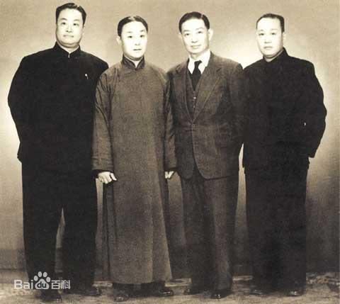
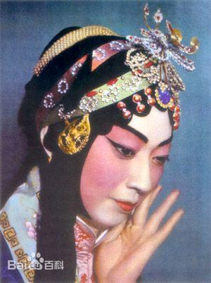
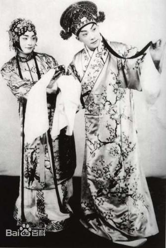
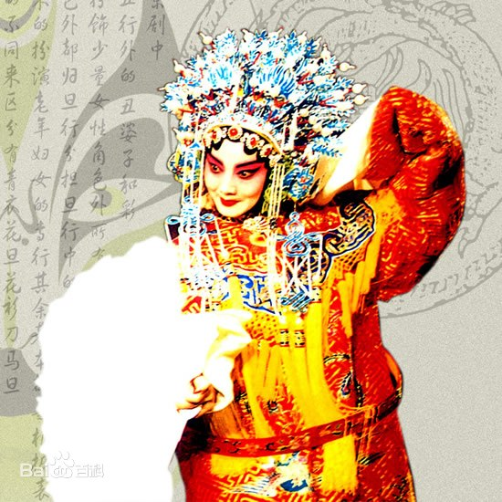

四大花旦 （戏曲界四大花旦）

梅兰芳:
梅兰芳（1894—1961）原名澜，字畹华，原籍江苏泰州，1894年生于北京。他出身梨园世家，8岁时便进“云和堂”拜师学艺，工青衣，兼刀马旦。他功底深厚，文武兼长；台风优美，扮相极佳；嗓音圆润，唱腔婉转妩媚，这种独特的艺术风格，世称“梅派”。善于运用歌唱、念白、身段、舞蹈等技巧，对人物的心理状态刻画入微，演唱出字清晰，音色明朗圆润，与婉转妩媚的唱腔相互辉映，格外流利甜美。代表剧目有：《宇宙锋》、《贵妃醉酒》、《霸王别姬》和《游园惊梦》
程砚秋:
程砚秋（1904—1958）1904年生于北京，是满族正黄旗人，曾改称程艳秋,成名后，因讨厌媚俗的“艳”字，便改名“砚秋”。他自幼学戏，受师于梅兰芳。在唱功上他讲究音韵，注重四声，追求“声、情、美、永”的完美结合，创造出一种幽咽婉转、起伏跌宕、若断若续、节奏多变的唱腔，形成独特的艺术风格，世称“程派”。程先生虽浓眉大眼、身材高大，却最擅长演悲剧中唱腔委婉的青衣，并以出神入化的水袖功见长，实在令人啧啧称奇。继承各家之精华，艺术上富于原创，唱腔缜密绵延，低回婉转，起伏跌宕，节奏多变，动听传神，讲究表现旋律的美和韵味的隽永。以擅演悲剧著称。代表剧目有：《荒山泪》、《春闺梦》、《窦娥冤》和《祝英台抗婚》等。
荀慧生:
荀慧生（1900—1968）
，祖籍河北东光。先生出生贫寒，幼年在河北梆子班学艺，19岁改演京剧，扮演花旦、刀马旦，他汲取梆子戏旦角艺术之长，熔京剧花旦的表演于一炉，形成独特的艺术风格，世称“荀派”。“荀派”念白有独特的风格，柔和圆润，富于韵律美；唱腔柔媚婉约，委婉动听，俏丽多姿，声情并茂，感人至深，。动作美、媚、脆，尤其要讲究眼神的运用，一举一动、一指一看节奏鲜明，讲究一出场就光彩照人，满台生辉。但结合不同的任务，又有不同的变化。喜剧人物则娇憨俏丽，悲剧人物是凄楚哀怨。念白接近口语，感情真切而富于旋律美。代表剧目有：《玉堂春》、《大英节烈》、《钗头凤》和《红楼二尤》等。
尚小云:
尚小云（1900—1976）
是河北南宫人。自幼入科班学艺，14岁时就被评为“第一童伶”。他初习武生，后改正旦，兼演刀马旦，唱腔以刚劲著称，字正腔圆，善于使用颤音，崤拔高昂。念白爽朗明快，流利大方，做功身段寓刚健于婀娜，武功根底深厚，嗓音宽亮，世称“尚派”。他把“杨派”的武生技艺吸收融化在自己的旦角戏里，使“尚派”唱法以刚劲见长，且武功出众，表演别具一格，成功地塑造了一批巾帼英雄和侠女烈妇。代表剧目有：《二进宫》、《祭塔》、《昭君出塞》和《梁红玉》等。
四大花旦



总结:
四大名旦的表演艺术各有特色，每人都有自己的代表剧目。 上世纪“四大名旦”： 1931年由上海《戏剧月刊》发起征文评论梅、尚、程、荀“四大名旦”，梅兰芳以565分的成绩名列榜首，程砚秋获540分，荀慧生获530分，尚小云获505分。次年，长城唱片公司约请“四大名旦”联合灌制《四五花洞》唱片，他们这次珠联璧合的合作，使“四大名旦”之称得到社会的公认。
京剧小常识

在一般情况下，二黄的唱腔流畅、舒缓，是一种平和、稳重、深沉、抒情的腔调，很适合表现沉思、忧伤、感叹、悲愤、压抑的情绪；西皮的唱腔流畅、活泼、跳动、有力，是一种明朗、刚劲、激昂的腔调，很适合表现喜悦、激动、高昂及愤怒的情绪。
关注中国京剧艺术团